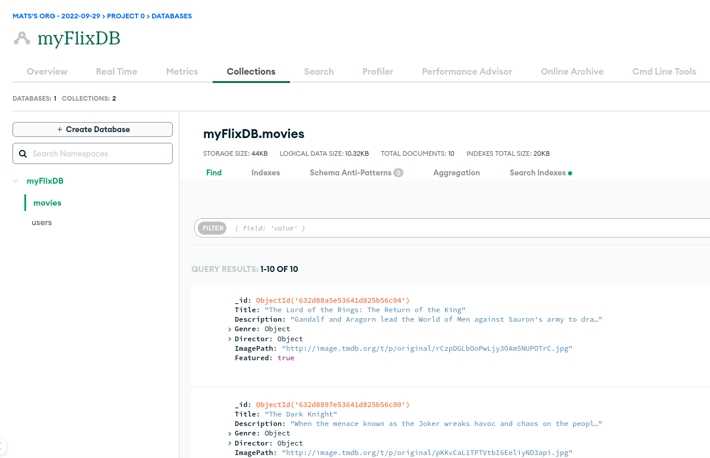
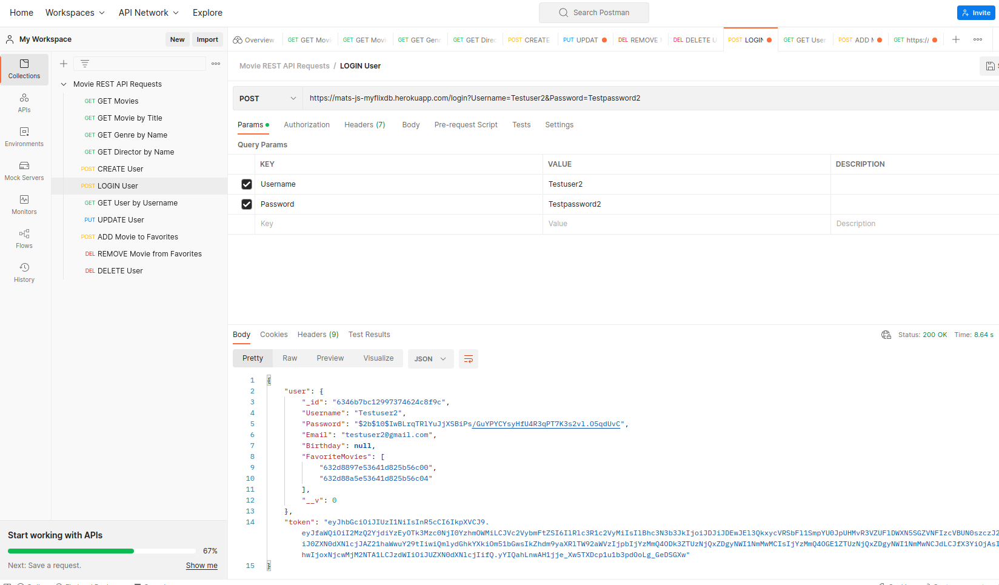

myFlix App Case Study
Overview
myFlix is a movies database web application based on the MERN stack. After the user creates an account, the app provides her with information about selected movies, as well as the respective directors and genres. The user can add/remove favorite movies and manage her account data.
Purpose and Context
The application was a mandatory project to be completed as part of the CareerFoundry Full-Stack Web Development curriculum.
Objective
The objective of the project was to gain a deeper understanding of both front- and backend development with JavaScript-based technologies, as well as bringing the front- and backend together to create a working web application.

Duration
2.5 weeks for the server-side, 1.5 weeks for the client-side.
Credits
Role: Lead Developer
Tutor: Andrew Magdy Gad
Mentor: Renish B.
Tools, Skills, Methodologies
For the server-side: Node.js, Express, MongoDB/Shell, Mongoose
for database models, Postman for API testing, Passport for HTTP
authentication and JWT token, Bcrypt for password hashing,
Express-Validator for input validation.
For the client-side: React, React Bootstrap, React-Redux,
Parcel.
Approach and Process
1. Server-Side Implementation
For the server-side, I created a RESTful API based on Node.js and Express that accesses a noSQL database (MongoDB) via common HTTP methods. The database uses CRUD operations for manipulation and provides data in JSON format.
> View documentation 
2. Client-Side Implementation
After the server-side was up-and-running, I created a single-page-application with React and React-Redux based on a project brief that needed to include the following views:
- Main view: Returns a list of ALL movies to the user (each listed item with an image, title, and description), allows for sorting and filtering, includes the ability to select a movie for more details.
- Single movie view: Returns data (description, genre, director, image) about a single movie to the user and allows users to add a movie to their list of favorites.
- Login view: Allows users to log in with a username and password.
- Registration view: Allows new users to register (username, password, email, birthday).
- Genre view: Returns data about a genre, with a name and description and displays example movies.
- Director view: Returns data about a director (name, bio, birth year, death year) and displays example movies.
Challenges and Learnings
Given that this was my first (larger) project based on React, it took
me a bit of time to get accustomed to React's structure and in
particular the use of state across components. Setting up the backend
first definitely helped me tackle this project, as trying to implement
both front- and backend simultaneously would have led to increased
complexity while trying to learn a new JavaScript framework on the
way.
Going forward, I want to change some of the more complex state
management of the app (regarding movie favorites) towards a simple API
fetch in order to minimize the risk of page malfunctioning in certain
cases (e.g. page reloads, restricted internet connection). In
addition, I'm planning to include a toggle button to add/remove
favorites in the movie view, which I learned to implement while
recreating this project in Angular.